材料 6個分
※粉量を変えると自動計算されます
生地
折り込み・フィリング
塗り用
作り方
生地
STEP 1
ホームベーカリーに材料を入れ、10分混ぜる
10分ほど混ぜて、粉気がなくなり生地がひとまとまりになればOKです。パンオショコラはこの後に生地を伸ばしてバターを折り込むため、ここで生地をこねすぎてグルテンを強くしすぎないことも大切です。
10分ほど混ぜて、粉気がなくなり生地がひとまとまりになればOKです。パンオショコラはこの後に生地を伸ばしてバターを折り込むため、ここで生地をこねすぎてグルテンを強くしすぎないことも大切です。

STEP 2
生地を丸めて、常温で40分おく
生地を丸めて表面を整え、乾燥しないようにボウルをかぶせます。休ませることで生地がゆるみ、次の工程で伸ばしやすくなります。
生地を丸めて表面を整え、乾燥しないようにボウルをかぶせます。休ませることで生地がゆるみ、次の工程で伸ばしやすくなります。
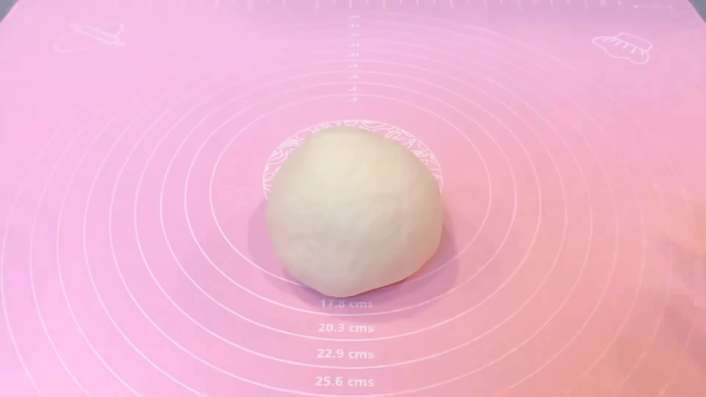
STEP 3
折り込み用バターを5g×12枚に切り分ける
一般的なレシピでは、折り込み用バターをシート状にして使いますが、本レシピでは、切り分けたバターをそのまま生地の上に並べます。バターを均等に並べやすいよう、できるだけ大きさをそろえて切り分けておきます。
一般的なレシピでは、折り込み用バターをシート状にして使いますが、本レシピでは、切り分けたバターをそのまま生地の上に並べます。バターを均等に並べやすいよう、できるだけ大きさをそろえて切り分けておきます。
STEP 4
生地を25㎝×25㎝に伸ばす（[動画 01:39]）
生地を四角に伸ばす際は、中央から左上、右上、左下、右下へと、めん棒を外側に向かって動かします。中央から四隅へ均等に伸ばしていくと、自然と四角い形に整っていきます。
生地を四角に伸ばす際は、中央から左上、右上、左下、右下へと、めん棒を外側に向かって動かします。中央から四隅へ均等に伸ばしていくと、自然と四角い形に整っていきます。
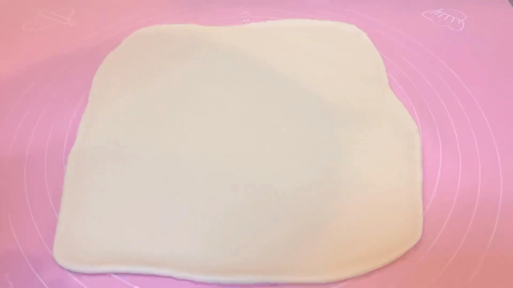
STEP 5
生地にバターを並べる
画像のようにバターを並べ、次の工程へ進みます。
画像のようにバターを並べ、次の工程へ進みます。
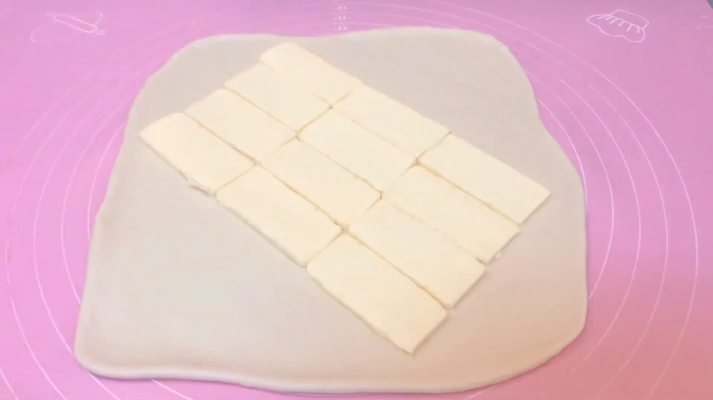
STEP 6
バターを包む（[動画 02:14]）
バターが生地からはみ出さないよう、隙間を作らずしっかり包みます。
バターが生地からはみ出さないよう、隙間を作らずしっかり包みます。
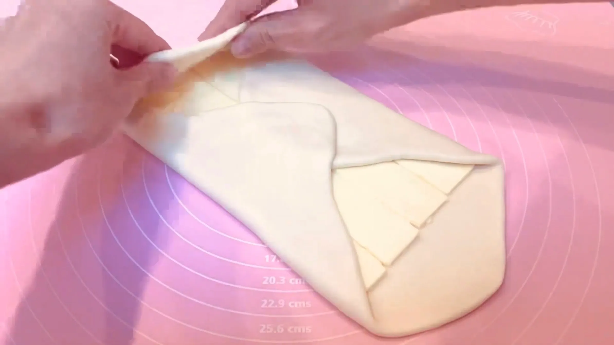
STEP 7
生地を20㎝×40㎝に伸ばす（[動画 02:41]）
バターを包んだ直後は生地もバターも固いため、最初はめん棒を転がさず、中心から外側に向かって押すように伸ばします。生地とバターが少しずつなじんで伸ばしやすくなってきたら、めん棒を転がして均一な厚さに伸ばします。
バターを包んだ直後は生地もバターも固いため、最初はめん棒を転がさず、中心から外側に向かって押すように伸ばします。生地とバターが少しずつなじんで伸ばしやすくなってきたら、めん棒を転がして均一な厚さに伸ばします。
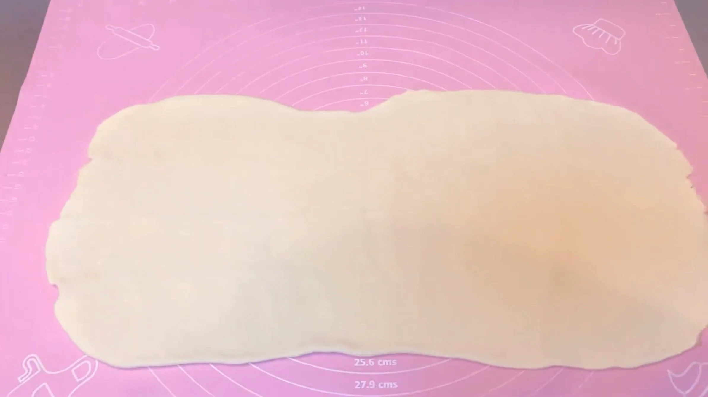
STEP 8
三つ折りする（[動画 03:36]）
折り目や端をできるだけ揃えて整えます。生地とバターの位置がずれていると、伸ばす際に一方だけが薄くなったり、バターがはみ出しやすくなります。ここで形を整えておくことで、バターと生地を均一に伸ばしやすくなり、きれいな層を作ることができます。
折り目や端をできるだけ揃えて整えます。生地とバターの位置がずれていると、伸ばす際に一方だけが薄くなったり、バターがはみ出しやすくなります。ここで形を整えておくことで、バターと生地を均一に伸ばしやすくなり、きれいな層を作ることができます。
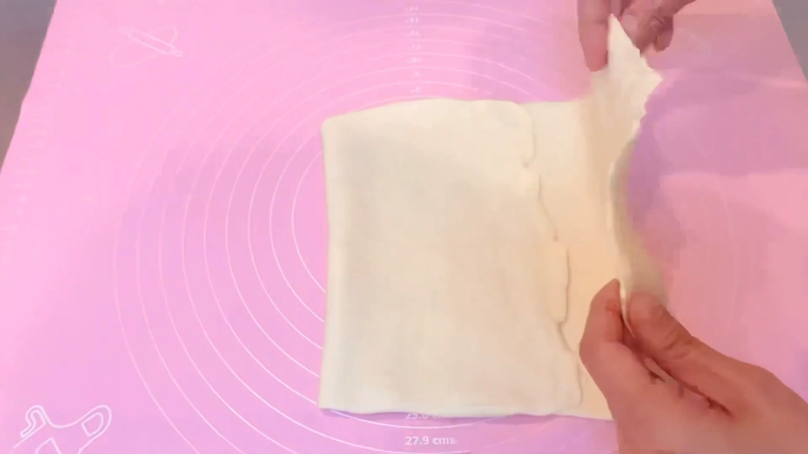
STEP 9
生地を20㎝×45㎝に伸ばす（[動画 03:36]）
生地がベタつくようであれば、打ち粉をします。STEP7同様、最初はめん棒で中心から外側に向かって押すように伸ばし、生地が伸ばしやすくなってきたら、めん棒を転がして均一な厚さに伸ばします。
生地がベタつくようであれば、打ち粉をします。STEP7同様、最初はめん棒で中心から外側に向かって押すように伸ばし、生地が伸ばしやすくなってきたら、めん棒を転がして均一な厚さに伸ばします。
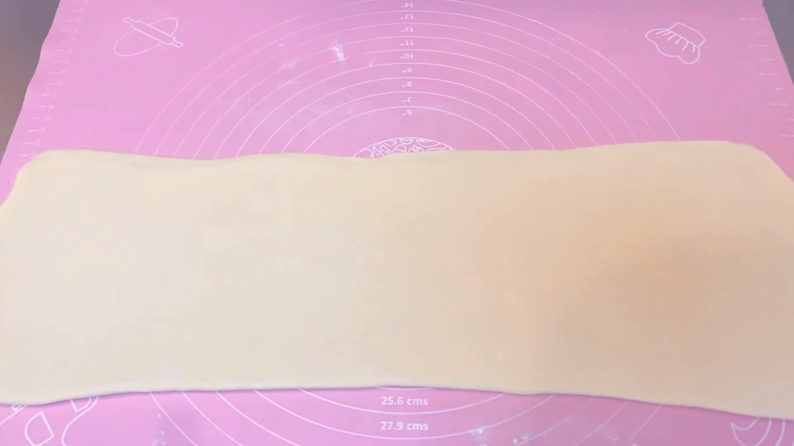
STEP 10
四つ折りする（[動画 04:08]）
四つ折りにすることで、一度の折り込みで多くの層を作ることができます。三つ折りと組み合わせることで、折り込み回数を増やしすぎず、サクサクした層を作りやすくします。
四つ折りにすることで、一度の折り込みで多くの層を作ることができます。三つ折りと組み合わせることで、折り込み回数を増やしすぎず、サクサクした層を作りやすくします。
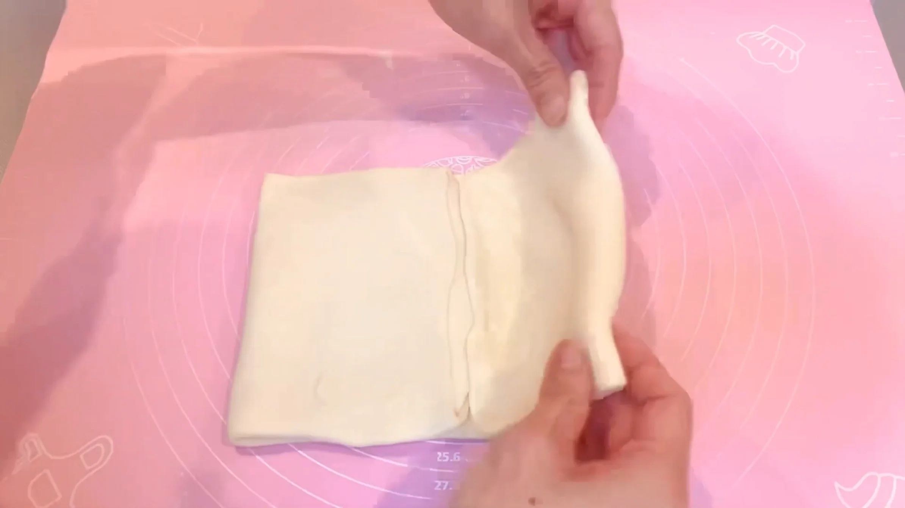
STEP 11
生地をラップに包み、30分冷凍する
折り込みを終えた生地を冷やすことで、作業中にやわらかくなったバターを再び締め、生地を扱いやすい状態に戻します。ここでしっかり生地を冷やしておくと、以降の伸ばし作業がしやすくなり、折り込みで作った層もきれいに保ちやすくなります。
折り込みを終えた生地を冷やすことで、作業中にやわらかくなったバターを再び締め、生地を扱いやすい状態に戻します。ここでしっかり生地を冷やしておくと、以降の伸ばし作業がしやすくなり、折り込みで作った層もきれいに保ちやすくなります。
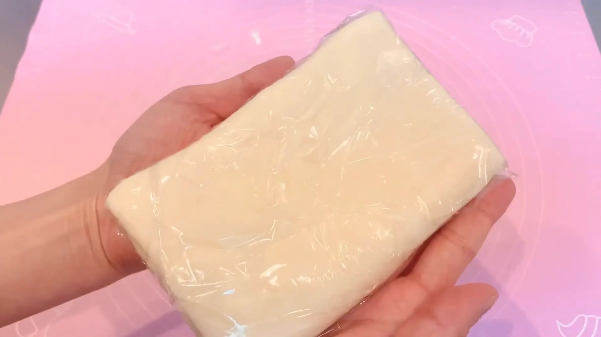
STEP 12
生地を22cm×28cmに伸ばす（[動画 07:22]）
折り込み後の冷凍した生地はとても固いので、なかなか一度に伸ばすことはできません。最初はめん棒で押すように伸ばし、生地が伸ばしやすくなってきたら、めん棒を転がして少しずつ伸ばしていきます。
折り込み後の冷凍した生地はとても固いので、なかなか一度に伸ばすことはできません。最初はめん棒で押すように伸ばし、生地が伸ばしやすくなってきたら、めん棒を転がして少しずつ伸ばしていきます。
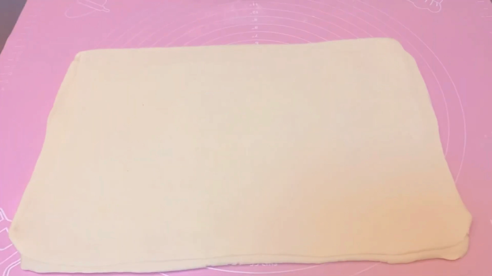
STEP 13
生地の両端を切り落とす（[動画 07:40]）
生地の両端を切り落とすことで、焼き上がりの断面がとてもきれいに仕上がります。巻き終わりで見えなくなる上下の部分はそのまま残し、チョコが見える左右の断面を整えます。また、切り落とした生地は、ぐるぐる巻きにして焼きます。
生地の両端を切り落とすことで、焼き上がりの断面がとてもきれいに仕上がります。巻き終わりで見えなくなる上下の部分はそのまま残し、チョコが見える左右の断面を整えます。また、切り落とした生地は、ぐるぐる巻きにして焼きます。
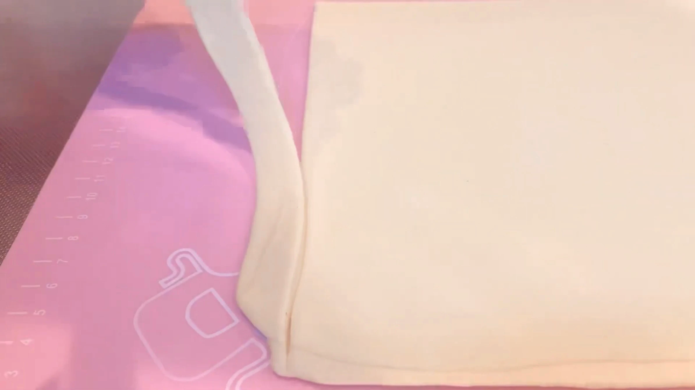
STEP 14
6等分する
一つ当たり「11㎝×9㎝」を目安に切り分けます。
一つ当たり「11㎝×9㎝」を目安に切り分けます。
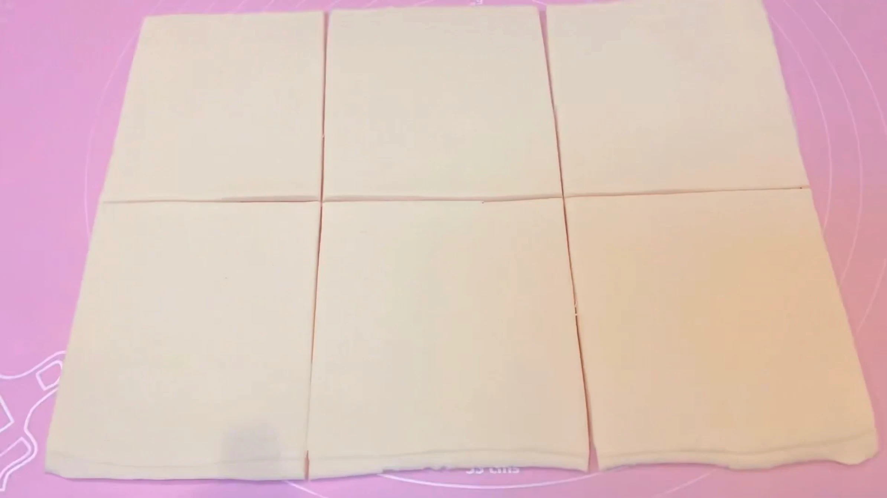
STEP 15
板チョコを入れて、巻き終わりが下になるように一周半巻く（[動画 08:38]）
本来はバトンショコラを2本入れて作りますが、今回は手軽に使える市販の板チョコで代用します。巻き終わりに少量の水を塗ってしっかり閉じ、焼いている間に生地がほどけるのを防ぎます。
本来はバトンショコラを2本入れて作りますが、今回は手軽に使える市販の板チョコで代用します。巻き終わりに少量の水を塗ってしっかり閉じ、焼いている間に生地がほどけるのを防ぎます。
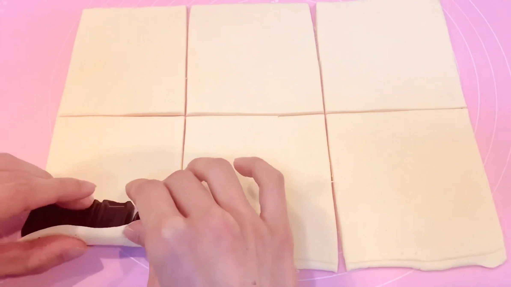
STEP 16
天板に並べ、ラップをして常温で1時間おく
一度冷凍した生地は冷えているため、発酵が進むまでに時間がかかります。1時間を目安とし、生地がひと回り大きくなり、ふんわりとしてきたら次の工程へ進みます。
一度冷凍した生地は冷えているため、発酵が進むまでに時間がかかります。1時間を目安とし、生地がひと回り大きくなり、ふんわりとしてきたら次の工程へ進みます。
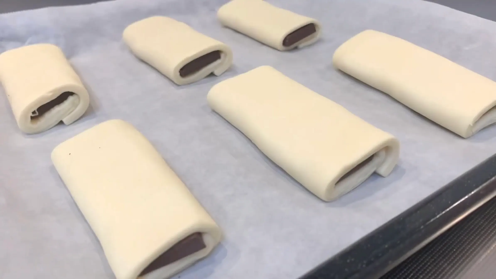
STEP 17
表面に牛乳を塗り、予熱したオーブン200℃で20〜25分焼く
焼き色を確認しながら、20分を目安に焼き上げます。オーブンや生地の大きさによって焼き上がりが変わるため、表面にこんがりと焼き色がつき、底面にも焼き色がついていることを確認して取り出します。
焼き色を確認しながら、20分を目安に焼き上げます。オーブンや生地の大きさによって焼き上がりが変わるため、表面にこんがりと焼き色がつき、底面にも焼き色がついていることを確認して取り出します。
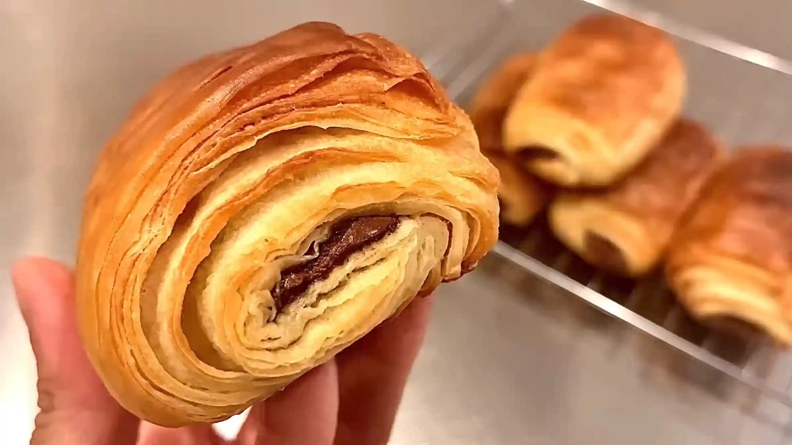
動画でチェック
おいしく作るためのワンポイントコラム
お店で買うイメージの強い『パン・オ・ショコラ』ですが、今回はおうちにある材料と道具でお手軽に作っていきます！デニッシュ生地を作る際の粉の配合による違いなど、パン・オ・ショコラを可愛く、そして美味しく仕上げるための「3つのコツ」をご紹介します。
① 粉の配合のコツ
今回は、特別な粉を使わずにおうちにある強力粉と薄力粉をブレンドして作りました。薄力粉を混ぜることで生地がキュッと縮んで戻りにくくなり、伸ばしやすさと焼成後のサクサク感が格段にアップします。粉の組み合わせによる焼き上がりの違いはこんなイメージです。
・強力粉：もっちり引きの強い、ボリュームのある食感に。
・準強力粉：外はパリッと中は軽い、本場に近い食感に
・強力粉＋薄力粉（今回）：サクッと歯切れがよく、おうちでも扱いやすい生地に。
扱いやすさと歯切れの良さを両立できる今回のブレンドは、おうち作りにとてもおすすめです。
② お店風に仕上がる成形のコツ
美しく仕上げるために、成形前に生地の両サイドをカットしておくのがポイントです。巻き終わりで下に隠れる部分はそのまま残して大丈夫ですが、チョコがのぞく左右の断面がきれいに揃っているだけで、一気にお店っぽい焼き上がりになります。カットした切れ端は、くるくる巻きにして渦巻きデニッシュにすると、とっても美味しいですね！巻くときは巻き終わりが下にくるように一周半巻き、終わりに少し水をつけてしっかりくっつけると、焼いているときに形が崩れません。
③ チョコ選びのコツ
本場フランスのパン・オ・ショコラは「2本のバトンショコラを巻く」のが伝統的な定義とされているようですが、今回は手軽に市販の板チョコで代用します。専用のバトンショコラは耐熱性があってチョコが溶けないため美しく仕上がります。一方、市販のチョコは少し溶けるのですが、味は十分すぎるほど美味しくできます。ちなみに、パンの中に包むとチョコはいつもより甘く感じやすいため、ブラックチョコ（ビターチョコ）を選ぶのがおすすめ。バター香る生地とチョコの相性は抜群ですね！
折り込みをもっと簡単にした最新版のレシピ（簡単なデニッシュ生地の作り方）も公開中です。「これ本当に自分で作ったの！？」と感動するくらいサックサクに焼き上がりますので、ぜひおうちで焼き立てを味わってみてください！
① 粉の配合のコツ
今回は、特別な粉を使わずにおうちにある強力粉と薄力粉をブレンドして作りました。薄力粉を混ぜることで生地がキュッと縮んで戻りにくくなり、伸ばしやすさと焼成後のサクサク感が格段にアップします。粉の組み合わせによる焼き上がりの違いはこんなイメージです。
・強力粉：もっちり引きの強い、ボリュームのある食感に。
・準強力粉：外はパリッと中は軽い、本場に近い食感に
・強力粉＋薄力粉（今回）：サクッと歯切れがよく、おうちでも扱いやすい生地に。
扱いやすさと歯切れの良さを両立できる今回のブレンドは、おうち作りにとてもおすすめです。
② お店風に仕上がる成形のコツ
美しく仕上げるために、成形前に生地の両サイドをカットしておくのがポイントです。巻き終わりで下に隠れる部分はそのまま残して大丈夫ですが、チョコがのぞく左右の断面がきれいに揃っているだけで、一気にお店っぽい焼き上がりになります。カットした切れ端は、くるくる巻きにして渦巻きデニッシュにすると、とっても美味しいですね！巻くときは巻き終わりが下にくるように一周半巻き、終わりに少し水をつけてしっかりくっつけると、焼いているときに形が崩れません。
③ チョコ選びのコツ
本場フランスのパン・オ・ショコラは「2本のバトンショコラを巻く」のが伝統的な定義とされているようですが、今回は手軽に市販の板チョコで代用します。専用のバトンショコラは耐熱性があってチョコが溶けないため美しく仕上がります。一方、市販のチョコは少し溶けるのですが、味は十分すぎるほど美味しくできます。ちなみに、パンの中に包むとチョコはいつもより甘く感じやすいため、ブラックチョコ（ビターチョコ）を選ぶのがおすすめ。バター香る生地とチョコの相性は抜群ですね！
折り込みをもっと簡単にした最新版のレシピ（簡単なデニッシュ生地の作り方）も公開中です。「これ本当に自分で作ったの！？」と感動するくらいサックサクに焼き上がりますので、ぜひおうちで焼き立てを味わってみてください！


今回は、おうちで手軽にサクサク食感が楽しめる『パン・オ・ショコラ』をご紹介します！市販の板チョコを使って、まるでお店のような美味しさに仕上げる工夫を詰め込みました。コラムでは「粉の配合のコツ」「お店風に仕上がる成形のコツ」「チョコ選びのコツ」の3つのポイントをご紹介します。